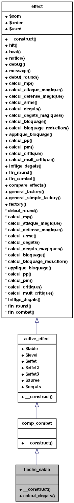

Référence de la classe fleche_sable
Graphe d'héritage de fleche_sable:

Graphe de collaboration de fleche_sable:
Fonctions membres publiques | |
| __construct ($aEffet, $aEffet2, $aDuree) | |
| inflige_degats (&$actif, &$passif, $degats) | |
| Applique les effets ayant lieu lorsque les dégâts ont lieu. | |
Documentation des constructeurs et destructeur
| fleche_sable::__construct | ( | $ | aEffet, | |
| $ | aEffet2, | |||
| $ | aDuree | |||
| ) |
Réimplémentée à partir de active_effect.
Documentation des fonctions membres
| fleche_sable::inflige_degats | ( | &$ | actif, | |
| &$ | passif, | |||
| $ | degats | |||
| ) |
Applique les effets ayant lieu lorsque les dégâts ont lieu.
- Paramètres:
-
$actif Personnage actif lors de l'action. $passif Personnage passif lors de l'action. $degats Dégâts infligés.
Réimplémentée à partir de effect.
Voici le graphe d'appel pour cette fonction :

La documentation de cette classe a été générée à partir du fichier suivant :
- SSO/Starshine-Online/class/competence.class.php